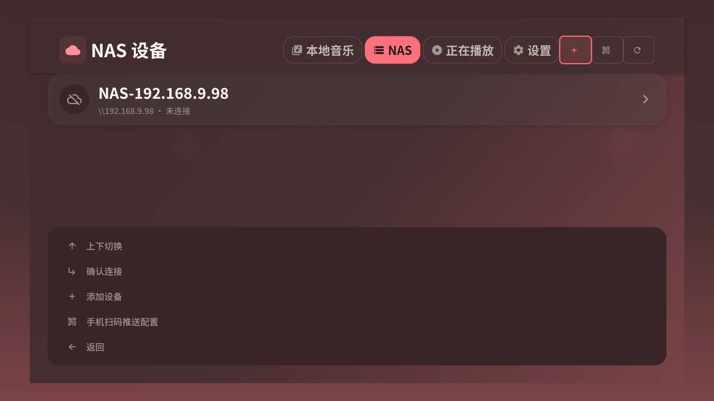
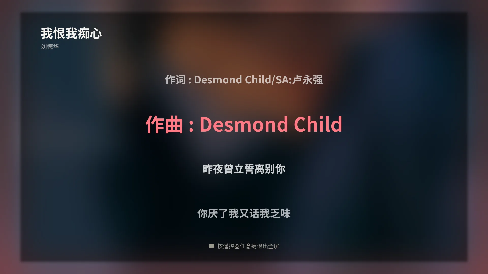
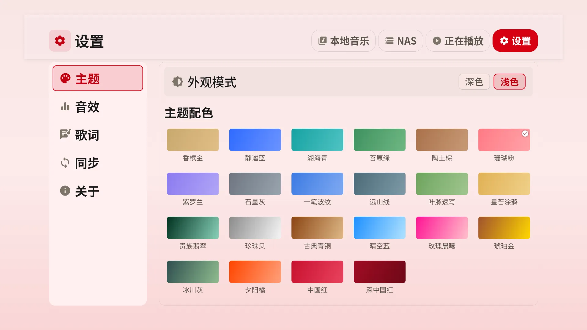

吾爱Music TV 版
吾爱Music TV 版 TV 版 · 文件夹浏览
TV 版 · 文件夹浏览
沙发上的好体验
不用鼠标、不用触屏，一个遥控器就是全部。远看清楚，按得明白。
01
全遥控器操作
方向键走完整个界面，焦点状态与字号专为远距离放大；左右切背景、上下调亮度、OK 播放暂停，按键提示常驻屏幕。
02
四种全屏沉浸形态
歌词、相册、星空环、音波并列可选，左右键循环切换。全屏歌词支持双语逐字与自定义歌词源，观演级视觉。
03
NAS 曲库与开机自启
局域网 NAS 目录直接入库，虚拟机顶盒成为家庭音乐中心；开机自启默认开启，进系统就在播放页。
真机画面
TV 端 1920×1080 真机截图，涵盖曲库、播放、歌词与设置。





